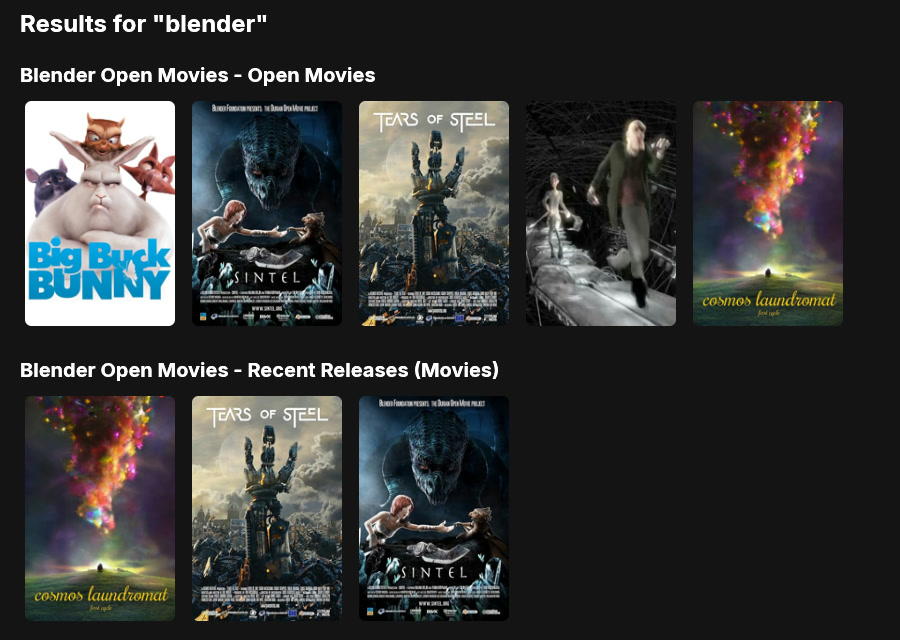
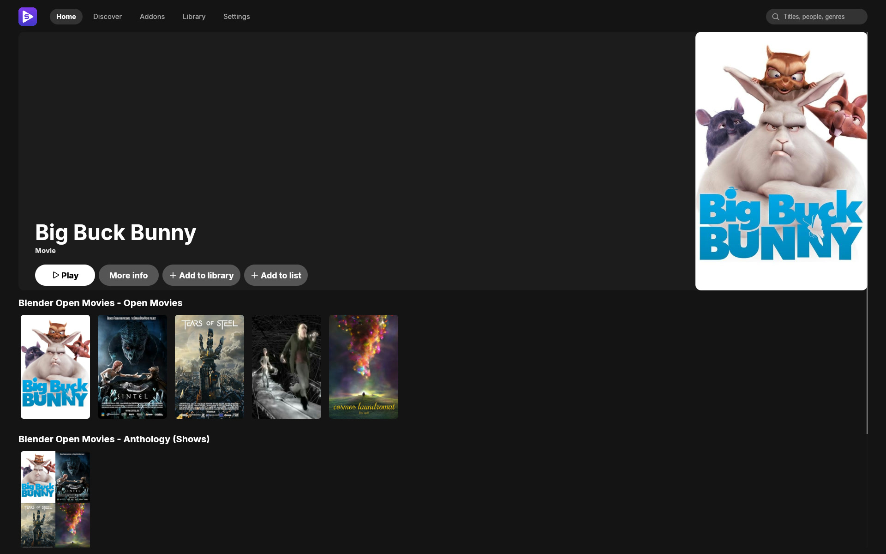
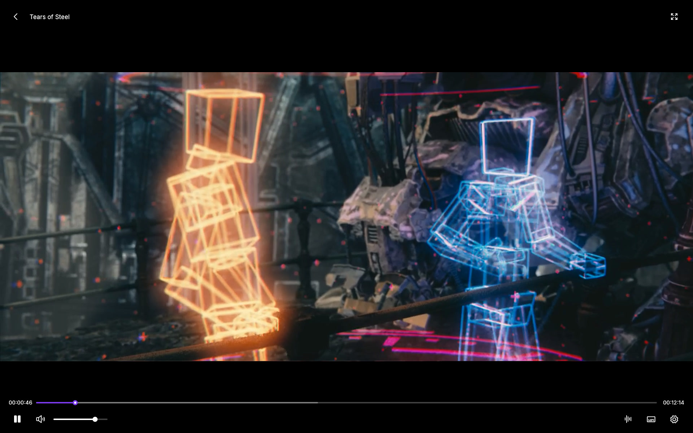
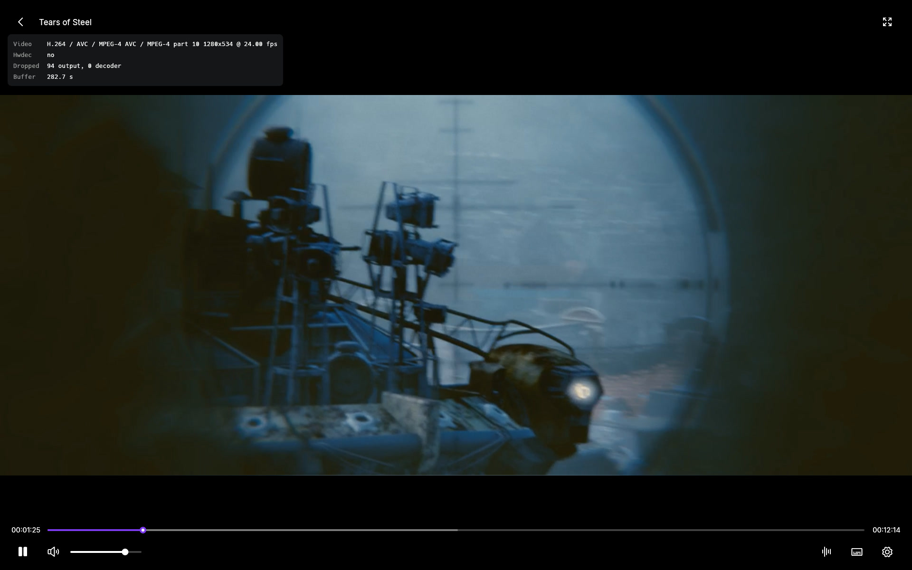
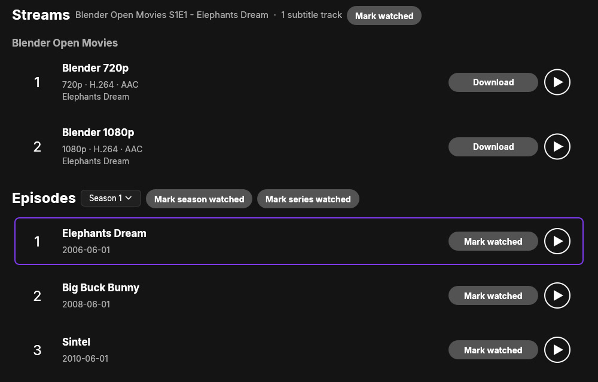
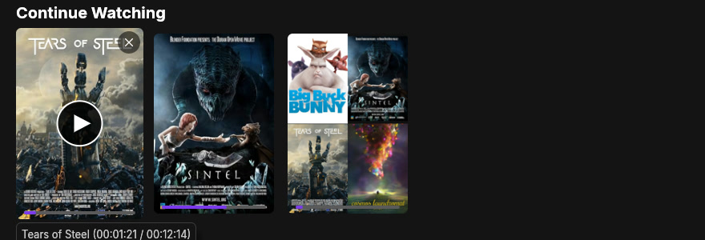
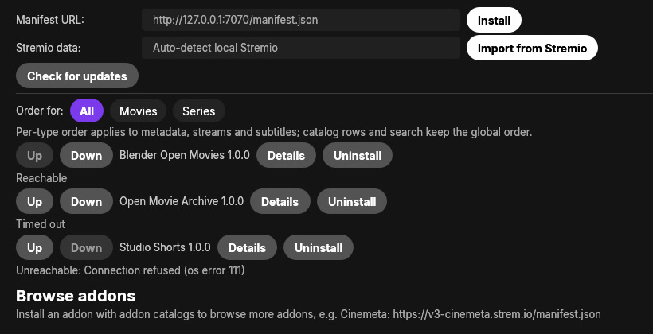
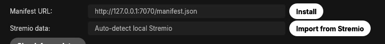
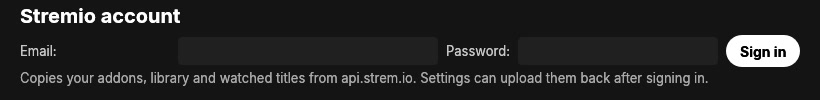
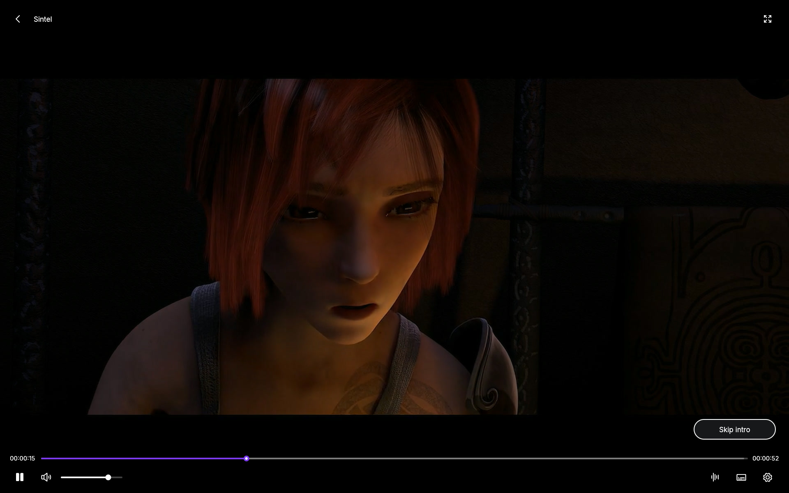

Search every catalog
Press Enter in the header search and a results page opens with one row for each catalog that supports search. Rows fill in as each addon replies.


Opens in 0.08 s. Written in Rust.
Both apps launched ten times on the same Linux desktop: Stremflix-rs as a release build, the official Stremio app from Flathub (1.2.2). These are the medians.
i7-10700KF, 32 GB RAM, GTX 1070 Ti, 1920×1080 Wayland through XWayland. Memory sums every process an app started; PSS splits shared pages, the fairer figure for Stremio’s multi-process layout. Stremio also bundles a streaming server and a full web UI. Playback, scrolling, search latency and GPU load were not measured.
Stremflix-rs against Stremio, median of 10 launches
7×faster
Time to first visible window
0.08 s vs 0.58 s
9×less
Memory 15 s after launch, RSS
136 MB vs 1229 MB
12×less
Memory 15 s after launch, PSS
86 MB vs 1018 MB
8×fewer
Processes
1 vs 8
26×less
CPU time in the first 15 s
0.2 s vs 4.5 s
3×smaller
On disk, binary and Flatpak alone
42 MB vs 134 MB
libmpv and the Flatpak runtime are extra


An addon answers with a stream URL and libmpv plays it inside the app window. Only http and https URLs are accepted.
Play a magnet or a .torrent from Library, drop one on the window, or paste a magnet anywhere. With no cache set, the files are deleted when playback stops.
Add a folder in Library and play its video files, or pass a file path on the command line. No addon is involved.
Press Enter in the header search and a results page opens with one row for each catalog that supports search. Rows fill in as each addon replies.

Pick a season and an episode. The next-episode button opens the next one, and when the stream has a bingeGroup it autoplays a stream from the same group. A Skip button appears over intros, recaps and credits.

Hover a poster and press play. Continue Watching resumes with the same stream; a series picks up the episode in progress or starts the next. The × in a card’s corner removes it. Progress is saved in SQLite.

Paste a manifest URL or open a stremio:// link, then press Install. Addons run in your priority order, each shows whether it is reachable, and the client ships with none built in.

| Linux | ~/.var/app/com.stremio.Stremio and ~/.local/share/*stremio* |
|---|---|
| macOS | ~/Library/WebKit/*stremio* and ~/Library/Application Support/*stremio* |
| Windows | *stremio* folders in %APPDATA%, %LOCALAPPDATA% and %LOCALAPPDATA%\Programs |
Import from Stremio copies addons, saved titles, watched titles and progress from a local install, reading a temp copy and never changing its files. Or sign in to your Stremio account and sync addons and library one way: nothing is uploaded.



Skip spans come from the addon, chapter names or TheIntroDB, which you can switch off.
Builds for Linux, macOS and Windows are on GitHub. Release builds tell you when a newer one is out.